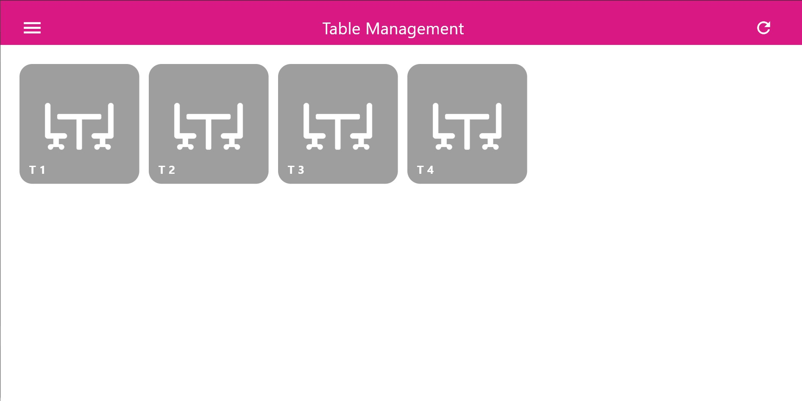
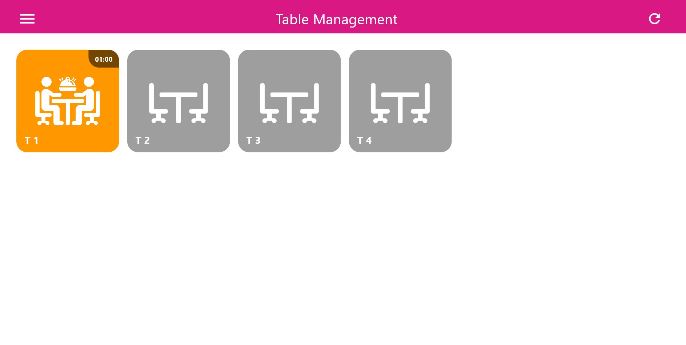
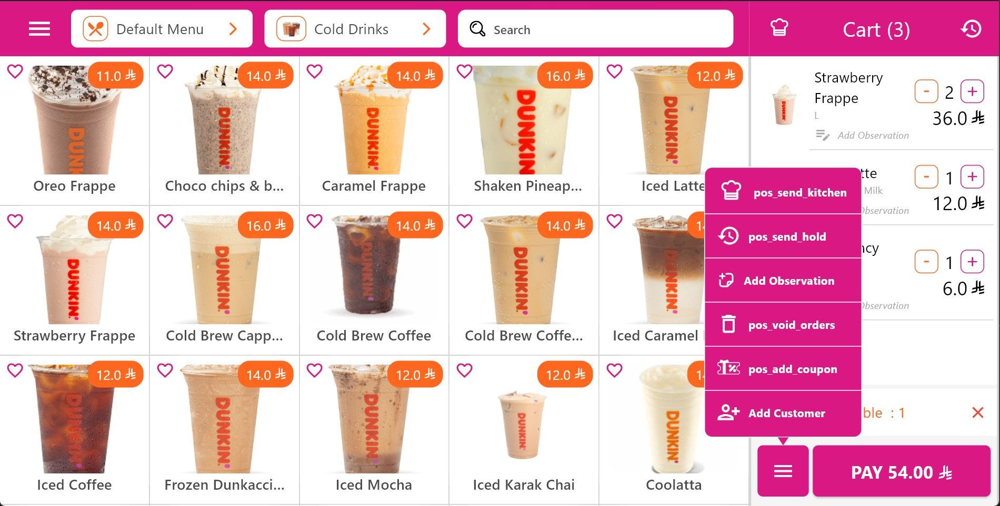
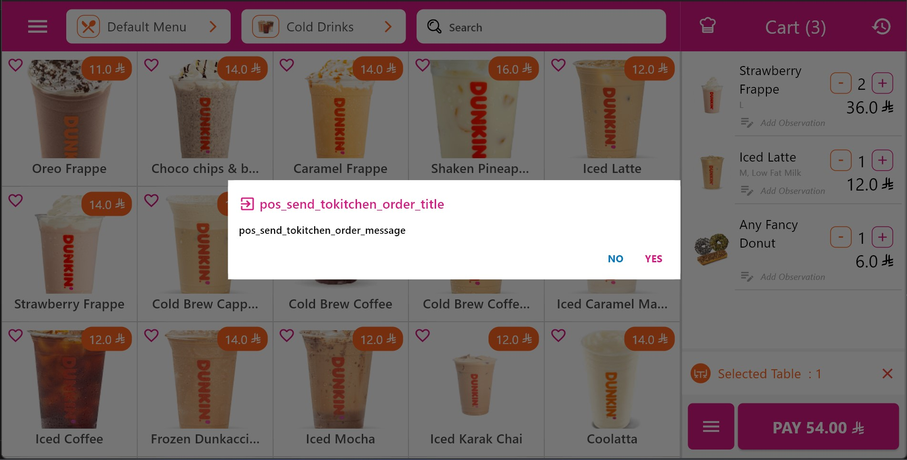
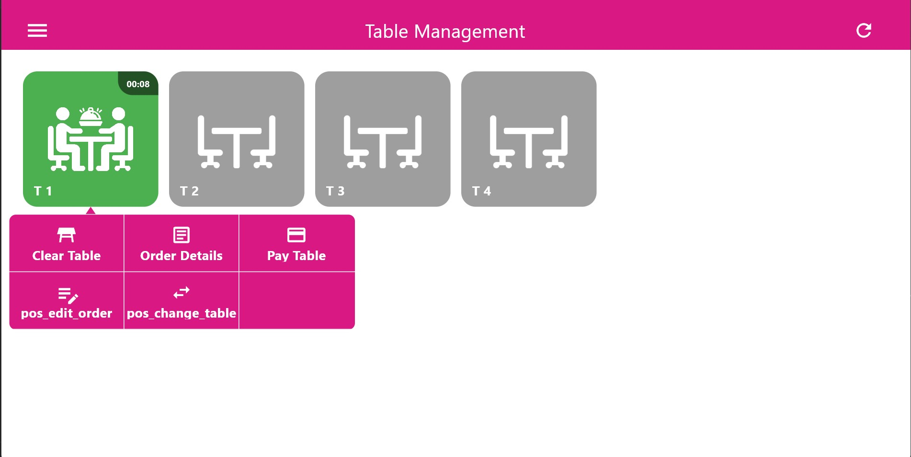
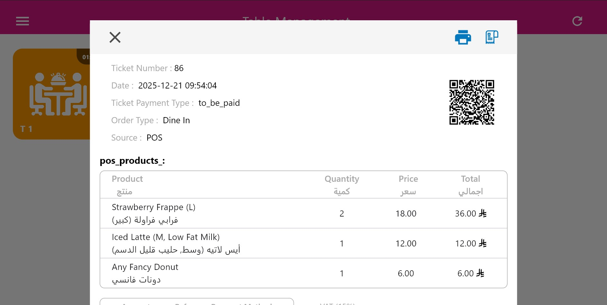

يعزّز النادل الذكي عمليات الجلوس بإدخال الوعي بالطاولات وذكاء توقيت الخدمة
مباشرة في سير عمل نقطة البيع. ويُمكّن النوادل والكاشير وطاقم المطبخ من العمل على نفس
مجموعة البيانات في الوقت الفعلي دون تنسيق يدوي.
- تكامل أصلي داخل تطبيق Smart POS
- تتبع إشغال الطاولات والتوقيت في الوقت الفعلي
- إرسال الطلبات مباشرة إلى محطات المطبخ
- تقليل تأخير الخدمة خلال أوقات الذروة
- تقارير دقيقة على مستوى الطاولة ومساءلة أوضح
الوصول إلى إدارة الطاولات
يُفتح النادل الذكي مباشرة من القائمة الرئيسية في Smart POS عبر خيار Table Management.
وتمثّل هذه الشاشة نقطة التحكم المركزية لجميع عمليات الجلوس داخل بيئة نقطة البيع.
عند فتح شاشة Table Management، يحمّل النظام ويعرض جميع الطاولات المُعدّة للفرع النشط،
بما في ذلك حالتها الحالية وحالة الإشغال ومؤشرات التوقيت المرتبطة بها.
يُفتح النادل الذكي مباشرة من القائمة الرئيسية في Smart POS عبر خيار Table Management.
وتمثّل هذه الشاشة نقطة التحكم المركزية لجميع عمليات الجلوس داخل بيئة نقطة البيع.
عند فتح شاشة Table Management، يحمّل النظام ويعرض جميع الطاولات المُعدّة للفرع النشط،
بما في ذلك حالتها الحالية وحالة الإشغال ومؤشرات التوقيت المرتبطة بها.

قائمة POS ← Table Management
اختيار طاولة
يمثّل اختيار طاولة بداية جلسة الجلوس. وبمجرد اختيارها،
تصبح الطاولة نشطة وتُربط بها جميع الطلبات والإجراءات اللاحقة.

اختيار طاولة متاحة
مؤشرات حالة الطاولة والتوقيت
يتتبع النادل الذكي توقيت الخدمة بصرياً عبر حالات طاولات مرمّزة بالألوان.
وتساعد هذه المؤشرات الطاقم على تحديد الأولويات وتجنب تأخير الخدمة.
- أخضر (Green): تم اختيار الطاولة للتو، والعملاء جالسون
- برتقالي (Orange): تم بلوغ حد الانتظار (مثلاً دقيقة واحدة)
- أحمر (Red): تم رصد وقت انتظار ممتد (دقيقتان أو أكثر)

أخضر – مشغولة حديثاً

برتقالي – تحتاج انتباهاً

أحمر – تأخير في الخدمة
إنشاء طلب
بعد اختيار الطاولة، ينتقل النادل إلى واجهة الطلب في نقطة البيع.
تُضاف المنتجات باستخدام نفس هيكل الفئات والمعدّلات والملاحظات
المتاح في عمليات نقطة البيع الاعتيادية.

إنشاء طلب مرتبط بالطاولة
إرسال الطلبات إلى المطبخ
بمجرد التأكيد، يُرسل الطلب فوراً إلى نظام عرض المطبخ.
وتُوجَّه الأصناف إلى محطات التحضير المناسبة وتُتتبَّع في الوقت الفعلي.

تم إرسال الطلب إلى المطبخ
أوامر الطاولة
بمجرد وجود طلب نشط على الطاولة، يوفّر النادل الذكي مجموعة من الأوامر على مستوى الطاولة
مباشرة داخل واجهة نقطة البيع.

أوامر إدارة الطاولات
- View Order Details
- Edit Order (POS Edit)
- Change Table
- Pay Table
- Clear Table

View Order Details

Change Table

Pay Table
يوفّر وحدة النادل الذكي، المدمجة بالكامل في تطبيق Smart POS، نهجاً منظّماً وفعّالاً
لإدارة عمليات الجلوس دون الاعتماد على تطبيقات نادل خارجية أو مستقلة.
ومن خلال مركزية إدارة الطاولات وإنشاء الطلبات وإرسالها إلى المطبخ وسير عمل الدفع
ضمن بيئة نقطة بيع واحدة، يضمن النظام الاتساق التشغيلي وسلامة البيانات عبر جميع مراحل الخدمة.
ومن خلال تتبع حالة الطاولات في الوقت الفعلي، وحدود التوقيت القابلة للتهيئة، والمؤشرات البصرية الواضحة،
يتمكّن الطاقم من مراقبة تدفق العملاء وتحديد أولويات الخدمة وتقليل وقت خمول الطاولات.
كما أن القدرة على تنفيذ إجراءات على مستوى الطاولة مثل تعديل الطلبات وتغيير الطاولات ومسح الجلسات
وإتمام المدفوعات مباشرة من نقطة البيع تقلّل بشكل ملحوظ تأخير الخدمة والأخطاء التشغيلية.
من الناحية التقنية، يعتمد النادل الذكي على البنية التحتية الأساسية لنقطة البيع للمصادقة
والمزامنة والتقارير. وتُسجَّل جميع تفاعلات الجلوس على مستوى نقطة البيع، مما يضمن بقاء
بيانات المبيعات ونشاط المطبخ ومؤشرات أداء الطاقم متوافقة وقابلة للتحليل.
وبشكل عام، يحوّل النادل الذكي تطبيق Smart POS إلى حل متكامل لإدارة الجلوس، مما يُمكّن
المطاعم من تبسيط عمليات الواجهة الأمامية، والحفاظ على تنسيق دقيق مع المطبخ،
وتقديم تجربة طعام أكثر تحكماً واستجابة.